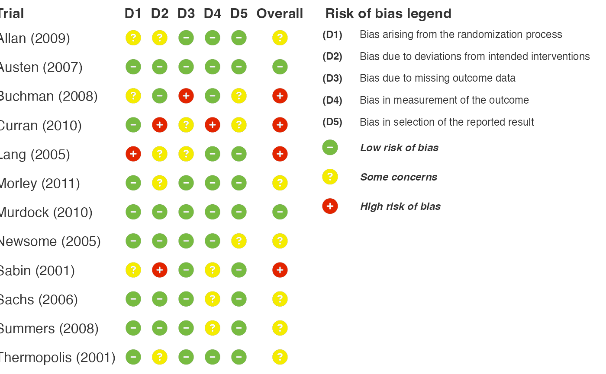
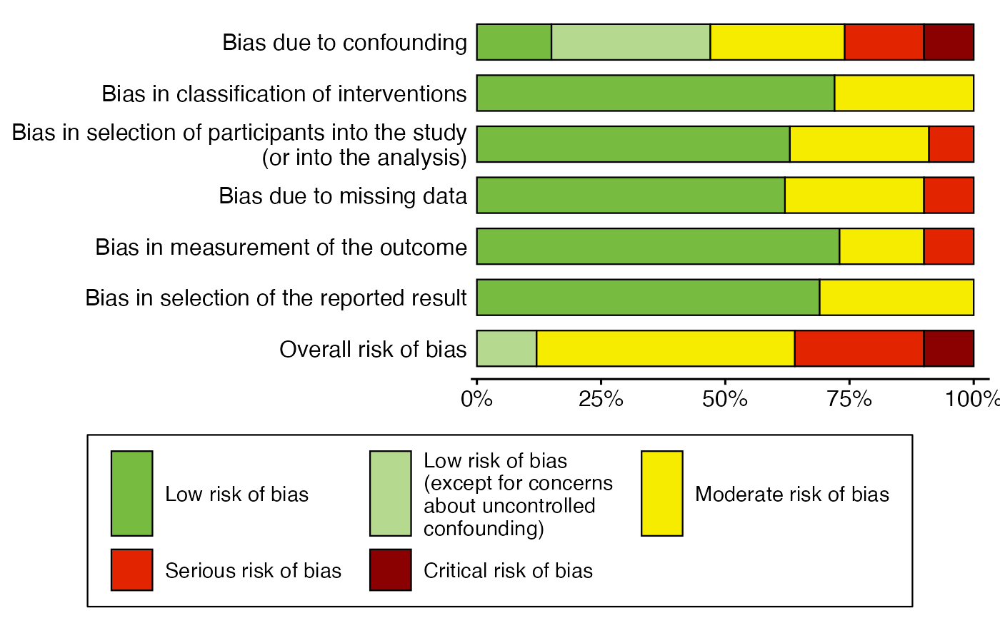
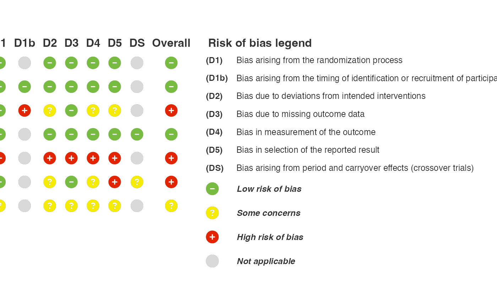

Example risk of bias datasets
rob_datasets.RdFictional risk of bias assessments for each supported tool. Each "study" is
a film character, with the character's surname as Author and the film's
release year as Year:
Usage
rob2_data
robins_i_data
robins_e_data
quadas2_data
clarity_data
rob_nma_data
probast_data
probast_ai_data
rob2_sq_dataFormat
Tibbles with one row per study:
- Author
Character surname, used as the study label.
- Year
Release year of the film.
- Subgroup
Subgroup (
rob2_dataandprobast_ai_dataonly).- weight
Study weight, summing to 1 (not in
rob_nma_data,probast_dataorprobast_ai_data).- D1, D2, ...
Domain judgements. See
rob_plot()for the domains of each tool.- R1-R3
ROBIS domain judgements (
rob_nma_dataonly).- A1-A3
Applicability judgements (
probast_dataandprobast_ai_dataonly).- Conclusions
Concerns about the authors' conclusions (
rob_nma_dataonly).
An object of class tbl_df (inherits from tbl, data.frame) with 12 rows and 9 columns.
An object of class tbl_df (inherits from tbl, data.frame) with 10 rows and 9 columns.
An object of class tbl_df (inherits from tbl, data.frame) with 10 rows and 10 columns.
An object of class tbl_df (inherits from tbl, data.frame) with 10 rows and 7 columns.
An object of class tbl_df (inherits from tbl, data.frame) with 10 rows and 15 columns.
An object of class tbl_df (inherits from tbl, data.frame) with 6 rows and 9 columns.
An object of class tbl_df (inherits from tbl, data.frame) with 9 rows and 9 columns.
An object of class tbl_df (inherits from tbl, data.frame) with 10 rows and 10 columns.
An object of class tbl_df (inherits from tbl, data.frame) with 7 rows and 38 columns.
Details
rob2_data: RoB 2 for individually randomised parallel-group trials, characters played by Anne Hathaway, withSubgroupby genre.clarity_data: CLARITY (all 12 domains), characters played by Anne Hathaway. Includes cluster (D11) and cluster crossover (D12) trials; these domains areNAfor other trials.robins_i_data: ROBINS-I V2, characters played by Bill Murray.robins_e_data: ROBINS-E, characters played by Bill Murray.quadas2_data: QUADAS-2, characters played by Adam Sandler.rob_nma_data: RoB NMA with ROBIS domains 1-3, characters played by Adam Sandler.probast_data: PROBAST, characters played by Emily Blunt.probast_ai_data: PROBAST+AI, characters played by Emily Blunt, withSubgroupseparating model development and evaluation.rob2_sq_data: answers to the RoB 2 signalling questions for 7 trials (characters played by Anne Hathaway): 3 parallel-group, 2 cluster-randomised and 2 crossover trials, withdesigngiving the design. Columns are named as in the cribsheets (1.1,1b.1,2.1a, ...,S.3), with the crossover questionsS.1-S.3last. Questions skipped by the algorithm areNA. Use withrob2_algorithm().
Overall judgements are not included (except Conclusions in
rob_nma_data), so they are derived by rob_plot() and rob_summary(),
or by rob2_algorithm() for rob2_sq_data.
Examples
rob_plot(rob2_data, add_rob_legend = TRUE)

rob_summary(robins_i_data, weight = weight, rob_tool = "robins_i")

rob2_sq_data |>
rob2_algorithm(design = design) |>
rob_plot(add_rob_legend = TRUE)
